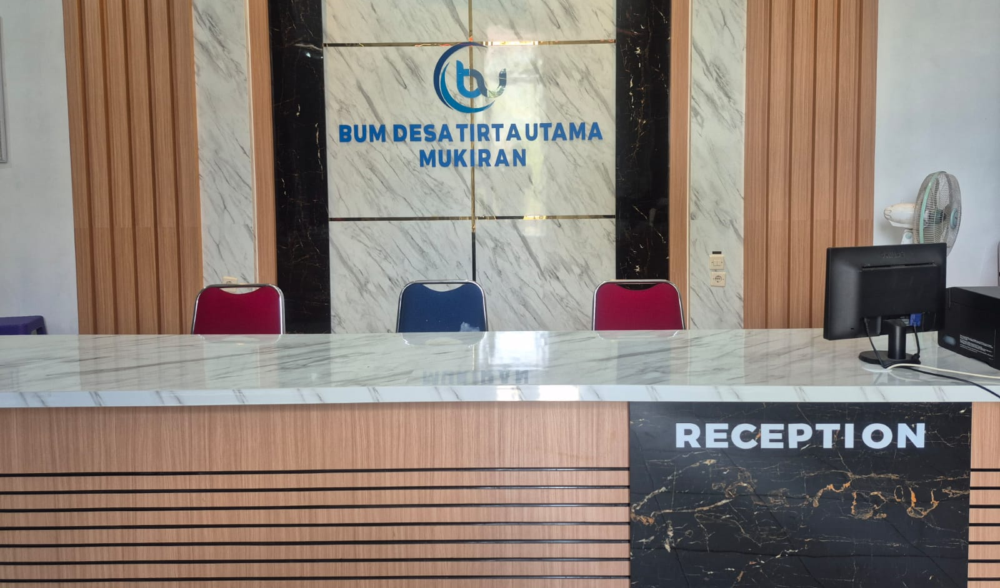

BUM Desa Tırta Utama
Menyediakan berbagai layanan untuk memenuhi kebutuhan sehari-hari masyarakat Desa Mukiran, mulai dari air bersih, simpan pinjam, hingga layanan pembayaran dan produk digital.
Layanan Kami
Lima layanan BUM Desa Tirta Utama untuk mendukung kebutuhan masyarakat dan pelaku usaha Desa Mukiran.
Penyediaan Air Bersih
Distribusi air bersih bagi warga Desa Mukiran dan sekitarnya.
Simpan Pinjam
Modal bagi pelaku UMKM dengan jasa pinjaman yang terjangkau.
Pasar Desa
Memfasilitasi UMKM Desa Mukiran agar berkembang di era digital.
Layanan PPOB
PBB, listrik, transfer ke bank dan e-wallet.
Layanan Digital
Pembuatan website, company profile, dan aplikasi sesuai kebutuhan.

Tentang BUM Desa Tirta Utama
Tirta Utama merupakan Badan Usaha Milik Desa (BUMDes) Mukiran yang menyediakan berbagai layanan untuk memenuhi kebutuhan sehari-hari masyarakat. Kami turut mendukung pembangunan desa melalui kontribusi terhadap Pendapatan Asli Desa (PADes), penyerapan tenaga kerja, serta penyediaan layanan multipayment dan produk digital.